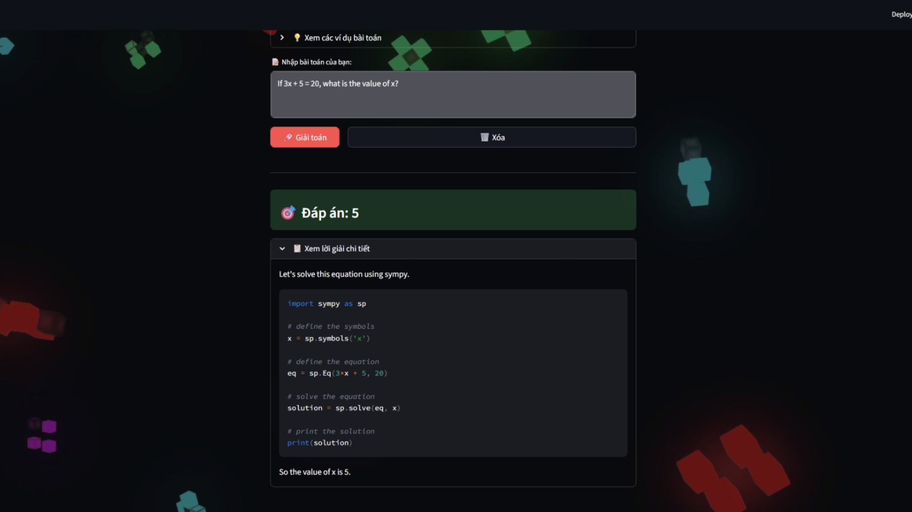
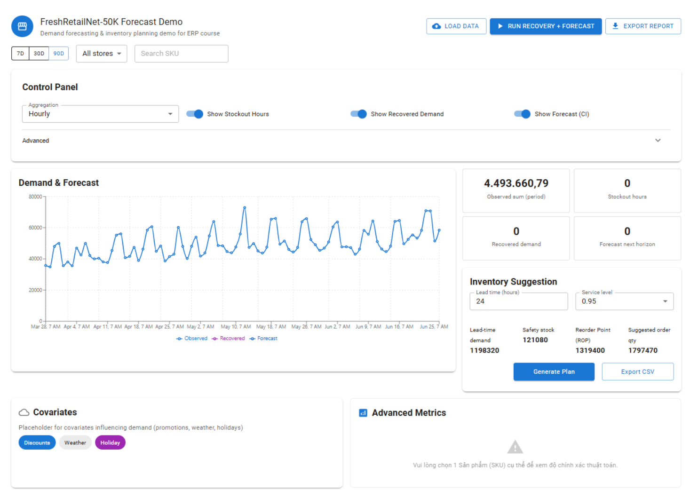

Featured Projects

Advanced LLM Reasoning
Improved 1B-parameter Small Language Model reasoning via SFT + RL, achieving better performance under constrained compute.
MATH500: +2.1% (23.9 → 26)
GSM8K: +7.2% (44.4 → 51.6)

RAG-based Knowledge Chatbot
Document Q&A system using FAISS vector database and LLM integration
10K+ docs
1.2s avg

Demand Forecasting System
Time series forecasting comparing DLinear vs LSTM with 12% RMSE improvement
-12% RMSE
7-day forecast